클로드 처음 시작 가이드
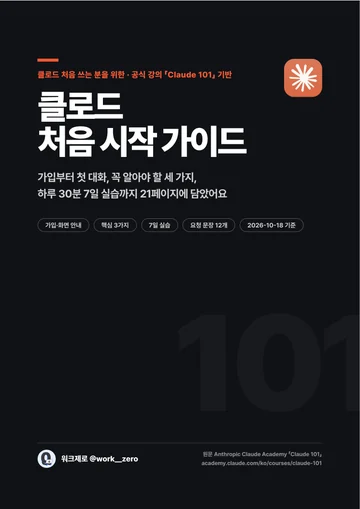
21쪽 전체는 PDF로 받아 두세요
이 페이지는 핵심 요약이에요. 화면 사진 단계, 용어 사전, 판정표까지 담긴 전체본은 PDF로 받아 인쇄하거나 휴대폰에 저장해 두고 보세요.
이런 분을 위해 만들었어요. 클로드를 한 번도 안 써 봤거나, 가입만 해 두고 뭘 해야 할지 모르는 분. 이 페이지는 21쪽 PDF의 핵심만 모은 요약이에요. 화면 사진을 보면서 순서대로 따라 하면 일주일 안에 내 업무 하나를 클로드에게 맡길 수 있어요.
클로드를 만든 회사 Anthropic이 무료로 공개한 공식 입문 강의 「Claude 101」(레슨 13개, 약 2시간 반)과 공식 도움말·요금 페이지, 실제 클로드 화면을 바탕으로 정리했어요. 화면 사진은 2026년 10월 18일에 찍었고, 개인정보는 흐리게 가렸어요.
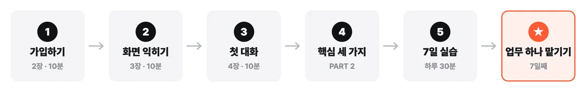
딱 세 개만 기억하세요
- 통째로 맡기기 — 질문을 여러 번 쪼개지 말고, 받고 싶은 결과물을 설명해서 한 번에 맡기세요.
- 세 줄 프롬프트 — 배경 · 작업 · 규칙 세 줄만 넣으면 답이 내 상황에 맞춰져요.
- 먼저 시험하기 — 중요한 일은 내가 이미 해 본 일 다섯 개로 먼저 시험해 보고 맡기세요.
1. 가입하고 열어 보기
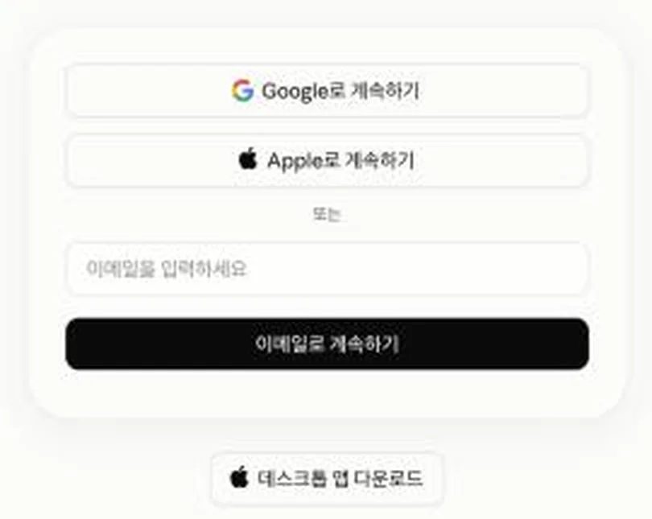
- 인터넷 창에서
claude.ai에 들어가요. - Google로 계속하기 또는 Apple로 계속하기를 누르면 가장 쉬워요.
- 이메일로 하려면 주소를 넣고 이메일로 계속하기 → 받은편지함의 로그인 링크를 눌러요. 메일이 안 오면 스팸함에서
@mail.anthropic.com을 찾아보세요. - 화면 안내에 따라 이름 등 몇 가지를 넣으면 첫 화면이 열려요.
컴퓨터(웹·Mac·Windows)와 휴대폰(iPhone·Android) 어디서든 같은 계정으로 쓰고, 대화가 이어져요. 앱은 claude.com/download에서 받아요.
무료 플랜에서도 돼요
- 웹 · 데스크톱 · 휴대폰 채팅, 음성 모드
- 웹 검색, 파일 올리기 · 파일 만들기
- 아티팩트(문서 · 표 · 대시보드 등 결과물)
- 메모리 · 커넥터(다른 앱 연결)
- 프로젝트 최대 5개
유료 플랜(Pro 이상)부터 돼요
- 리서치(여러 출처를 모아 보고서로)
- Claude Code(개발 도구), Chrome 확장 · Microsoft 365 연동
- 가장 높은 성능 모델(Opus 등)
- 더 많은 사용량, 작업 맡기기 · 예약 실행
무료 플랜은 5시간마다 쓸 수 있는 양이 다시 채워져요. 돈이 드는 결정 전에는 claude.com/pricing을 한 번 더 확인하세요.
2. 화면 둘러보기
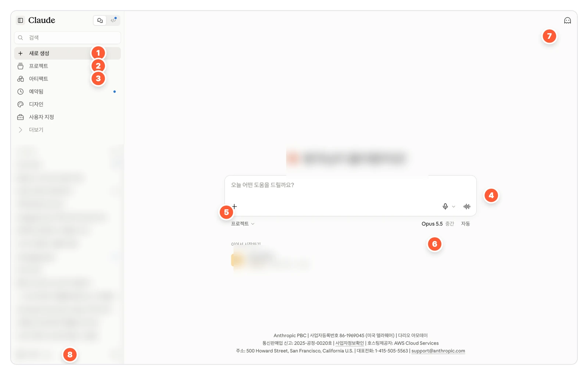
- 새로 생성 — 새 대화 시작. 주제가 바뀌거나 대화가 꼬였을 때도 여기서 새로
- 프로젝트 — 자료와 규칙을 넣어 두는 작업 폴더
- 아티팩트 — 클로드가 만들어 준 문서·표 같은 결과물 모음
- 입력창 — 부탁할 내용을 쓰는 곳. 줄을 바꾸려면 Shift+엔터
- + 버튼 — 파일·사진 올리기, 커넥터, 리서치 같은 도구
- 모델 이름 — 어떤 클로드와 대화할지. 처음엔 기본값 그대로
- 유령 아이콘 — 시크릿 채팅 — 기록이 남지 않고 학습에 쓰이지 않는 대화
- 내 이름 — 누르면 설정이 열려요
처음 할 설정 두 가지
① Claude 지침 — 내 소개 한 번만 적기. 내 이름 → 설정 → 계정 → Claude 지침. 여기 적은 내용은 모든 대화에 적용돼요.
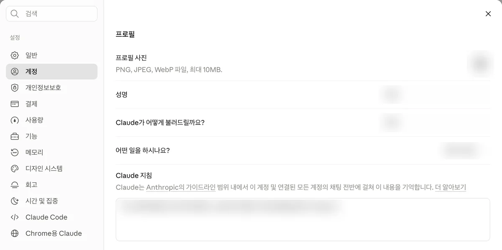
저는 ○○ 회사 마케팅팀에서 SNS를 맡고 있어요. 답은 짧게, 존댓말로, 결론부터 주세요.② 개인정보보호 — 내 대화를 학습에 쓸지 고르기. 설정 → 개인정보보호에서 'Help improve our AI models'를 끄면 내 대화가 Claude 개선에 쓰이지 않아요.
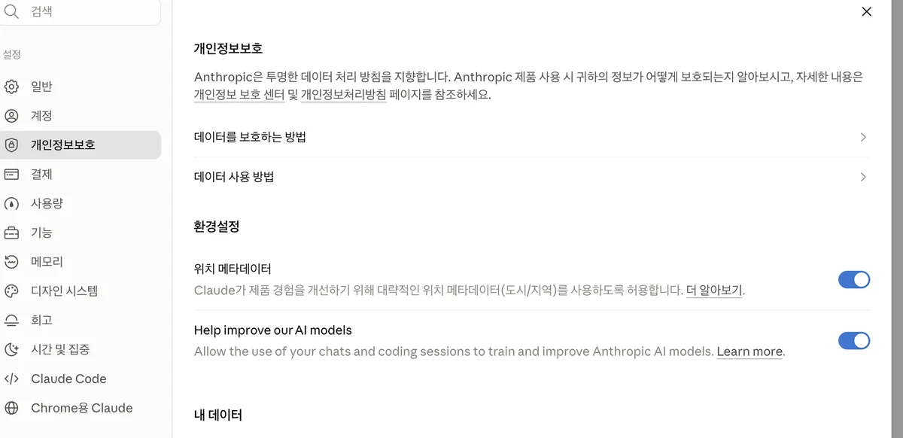
3. 첫 대화 — 같은 부탁을 두 번 해 보세요
짧게 "신제품 소개 글 써 줘" 라고 하면, 어떤 제품인지·누구에게·어디에 올릴 건지 되물어요.
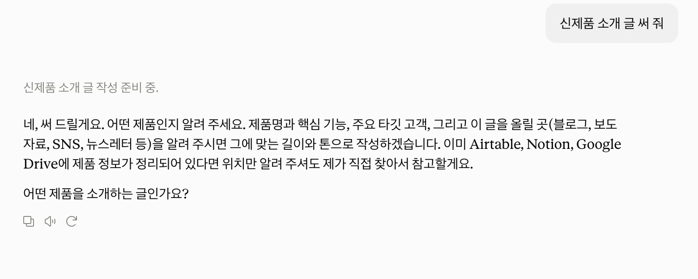
배경 · 작업 · 규칙 세 줄로 물으면 첫 답에 바로 쓸 수 있는 글이 나와요.
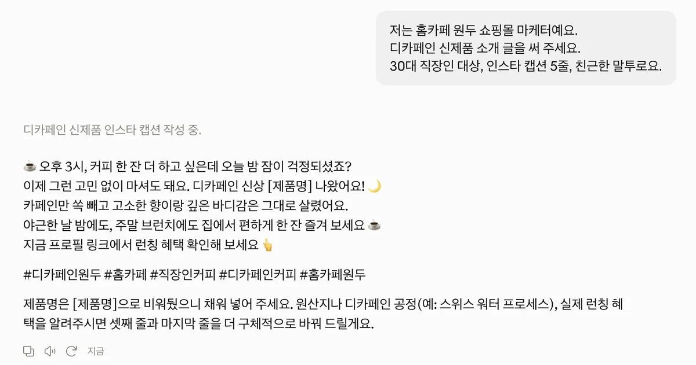
| 답이 별로일 때 | 이렇게 말해요 |
|---|---|
| 너무 길어요 | "두 문단으로 줄여 줘" |
| 너무 딱딱해요 | "친구한테 말하듯 편하게 바꿔 줘" |
| 형식이 달라요 | (원하는 모양을 붙여 넣고) "이 형식으로 다시" |
| 엉뚱해요 | "내가 물은 건 X가 아니라 Y야" — 그래도 안 되면 '새로 생성' |
| 맞는지 모르겠어요 | "출처를 달아 줘", "확실하지 않은 건 표시해 줘" |
핵심 ① 통째로 맡기기
여러 단계짜리 일을 질문 여러 개로 쪼개면, 단계를 잇는 일은 결국 내가 해요. 받고 싶은 결과물을 처음부터 설명하면 클로드가 계획하고, 만들어서 돌려줘요.
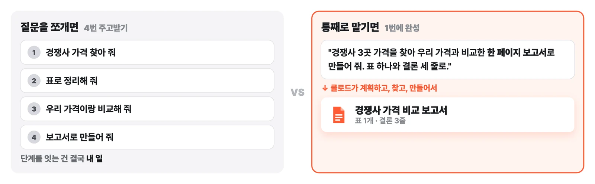
(결과물 이름)을 만들어 주세요.
재료: (올린 파일 / 붙여 넣은 내용 / 웹에서 찾기)
들어갈 것: (항목 1), (항목 2), (항목 3)
모양: (표 / 한 페이지 문서 / 슬라이드), 분량 (○쪽 / ○줄)
누가 볼 건지: (팀장님 / 고객 / 나)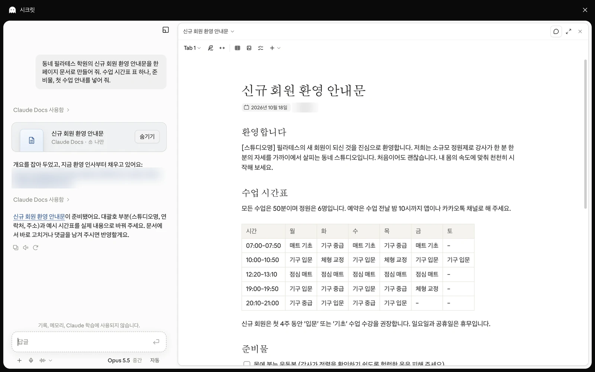
핵심 ② 세 줄 프롬프트
짧게 물으면 클로드는 내 상황을 몰라서 되묻거나 두루뭉술하게 답해요. 배경 · 작업 · 규칙 세 줄만 넣으면 첫 답부터 내 상황에 맞춰져요.
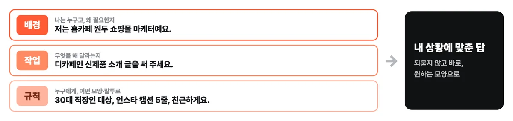
저는 (내 역할)이고, (왜 필요한지).
(무엇을) 해 주세요.
(누가 볼지) 대상이고, (모양·분량)으로, (말투)로 써 주세요.| 한 줄로 물으면 | 세 줄로 물으면 |
|---|---|
| 회의록 정리해 줘 | 저는 5명 팀의 팀장이에요. 이 회의록에서 결정된 것과 할 일을 뽑아 주세요. 담당자·마감일 표로, 팀 메신저에 바로 올릴 수 있게요. |
| 사과 메일 써 줘 | 저는 쇼핑몰 CS 담당이에요. 배송이 2주 늦어진 고객에게 사과 메일을 써 주세요. 두 번째 지연이라 정중하게, 쿠폰 안내 포함, 5문장 이내로요. |
핵심 ③ 먼저 시험하기
중요한 일을 바로 맡기지 말고, 결과를 이미 아는 지난 작업으로 먼저 시험하세요. 잘 맞는 일은 계속 맡기고, 여러 번 다듬어도 안 맞는 일은 내가 해요.
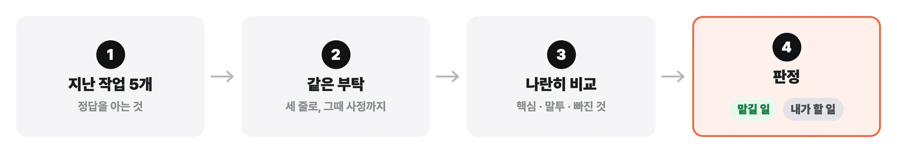
- 지난 작업 5~10개 고르기 — 내가 쓴 메일, 만든 보고서처럼 정답을 아는 것
- 같은 결과가 나오게 부탁하기 — 그 일을 할 때 알던 사정까지 세 줄 프롬프트에 넣어서
- 내 결과와 나란히 비교하기 — 핵심을 잡았나? 말투가 맞나? 빠진 건?
- 판정하기 — 맞으면 '맡길 일', 고쳐도 안 맞으면 '내가 할 일'
하루 30분, 7일 실습 플랜
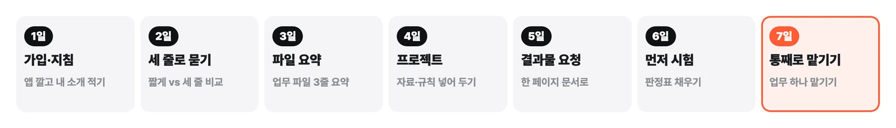
| 일차 | 할 일 | 끝났다고 볼 기준 |
|---|---|---|
| 1일 | 가입하고 앱 깔기. Claude 지침에 내 일과 원하는 말투 적기 | 컴퓨터와 휴대폰에서 같은 대화가 보인다 |
| 2일 | 궁금한 것 하나를 짧게 한 번, 세 줄로 한 번 물어보기 | 두 답의 차이를 내 말로 설명할 수 있다 |
| 3일 | 업무 파일 하나를 + 버튼으로 올려 "내가 알아야 할 것만 3줄로" 요약 받기 | 파일을 다 읽지 않고도 요점을 안다 |
| 4일 | 자주 하는 일 하나로 프로젝트 만들기. 자료 2~3개와 규칙 넣기 | 그 프로젝트에선 자료를 다시 안 올린다 |
| 5일 | 같은 내용을 "요약해 줘"와 "○○용 한 페이지 문서로 만들어 줘"로 각각 부탁 | 바로 쓸 수 있는 결과물이 하나 생긴다 |
| 6일 | 지난 작업 5개로 시험하고 판정하기 | '맡길 일'과 '내가 할 일'이 하나씩 정해진다 |
| 7일 | '맡길 일' 하나를 맡기는 문장 틀로 통째로 부탁하기 | 다음 주에 같은 일을 한 번의 부탁으로 시작한다 |
복사해서 바로 쓰는 문장 12개
괄호 안만 내 상황으로 바꿔서 쓰세요.
메일 답장
저는 (역할)이에요. 아래 메일에 (수락/거절/일정 조율) 답장을 써 주세요. (상대)에게 보내는 거라 (정중하게/편하게), 5문장 이내로요.회의록 정리
이 회의 내용에서 결정된 것과 할 일을 뽑아 주세요. 할 일은 담당자·마감일 표로 주세요.보고서 초안
저는 (팀/역할)이에요. 아래 자료로 (팀장님/대표님)께 올릴 (주간/월간) 보고서를 써 주세요. 결론 먼저, 한 페이지로요.긴 문서 요약
이 문서에서 (내 입장)으로서 알아야 할 것만 3줄로, 결정이 필요한 건 따로 표시해 주세요.엑셀 수식
(열 구성)인 표에서 (원하는 계산)을 하는 수식을 알려 주세요. 수식과 넣는 순서를 번호로요.표로 정리
아래 내용을 (항목1)·(항목2)·(항목3) 열이 있는 표로 정리해 주세요.아이디어
(대상)을 위한 (주제) 아이디어 10개를 주세요. 비용이 적게 드는 순서로요.글 다듬기
아래 글의 뜻은 그대로 두고, (대상)이 읽기 쉽게 (짧게/부드럽게) 고쳐 주세요. 바꾼 이유도 짧게요.발표 개요
(주제)로 (시간)분 발표를 해요. 청중은 (대상)이에요. 슬라이드 (개수)장 개요를 주세요.고객 응대 문구
저는 (업종) 사장님이에요. (상황)인 고객에게 보낼 문자를 (분량) 이내로 3가지 버전으로 써 주세요.일정 짜기
(목표)를 (기간) 안에 끝내야 해요. 하루 (시간)씩 할 수 있어요. 주 단위 계획표를 주세요.배우기
(어려운 개념)을 (나이/수준)도 알게 예시 하나로 설명해 주세요. 마지막에 확인 질문 하나도요.자주 묻는 것
무료로도 충분한가요? 처음 1~2주는 무료로 충분해요. 채팅, 파일 올리기, 웹 검색, 결과물 만들기, 프로젝트(최대 5개)까지 돼요.
한도에 걸리면요? 무료 플랜은 5시간마다 다시 채워져요. 한 대화가 아주 길어지면 빨리 닳으니, 주제가 바뀌면 '새로 생성'으로 새 대화를 여세요.
회사 자료를 올려도 되나요? 회사 규정을 먼저 확인하세요. 고객 개인정보와 영업 비밀은 빼거나 가리고 올리는 게 기본이에요.
틀린 답을 하면요? "출처를 달아 줘", "확실하지 않은 건 표시해 줘"라고 하고, 중요한 숫자와 사실은 직접 확인하세요.
공식 자료
- 원문 강의 Claude 101: academy.claude.com/ko/courses/claude-101 — 무료, 한국어, 퀴즈를 풀면 수료 배지
- 공식 도움말: support.claude.com
- 요금: claude.com/pricing
- 앱 받기: claude.com/download
기준일 2026년 10월 18일. 클로드는 화면과 요금이 자주 바뀌어요. 버튼 위치가 조금 달라도 이름은 비슷하니 같은 이름을 찾아보세요.
따라 하다 막히면 PDF를 펼쳐 보세요
가입부터 7일 실습까지 21쪽에 순서대로 담았어요.